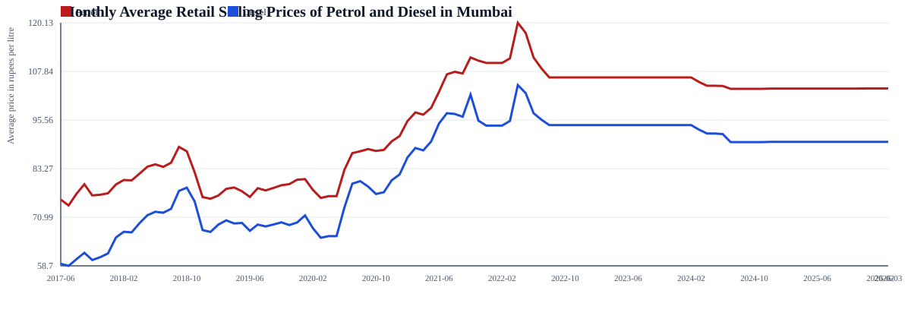
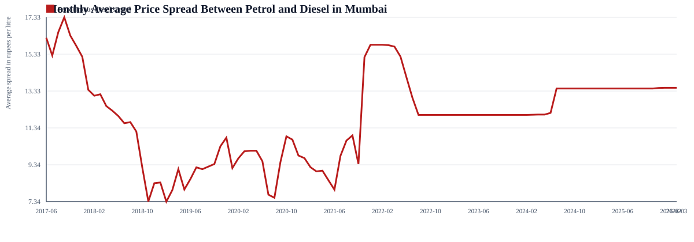
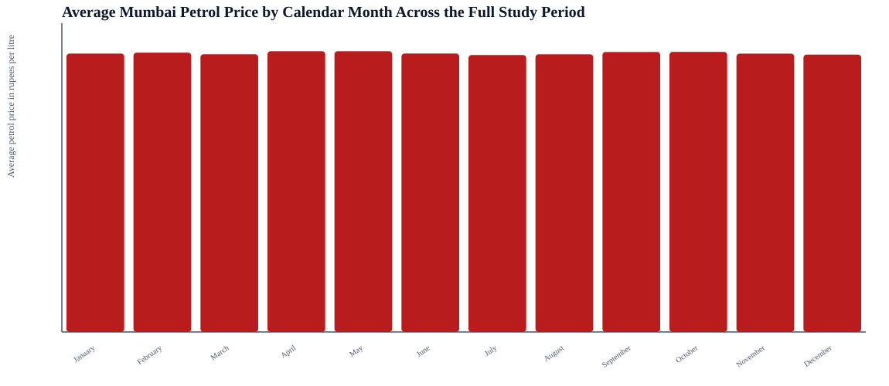
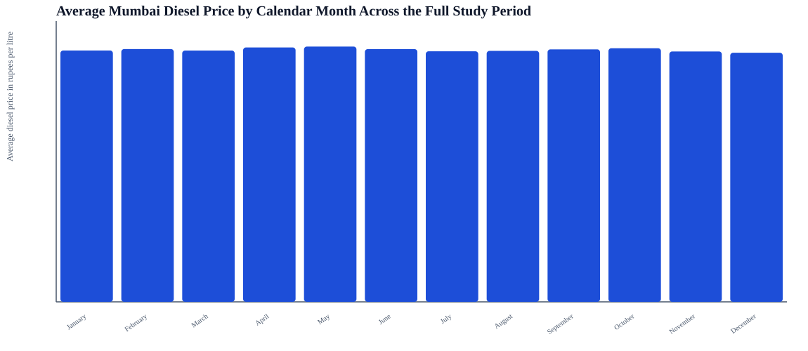
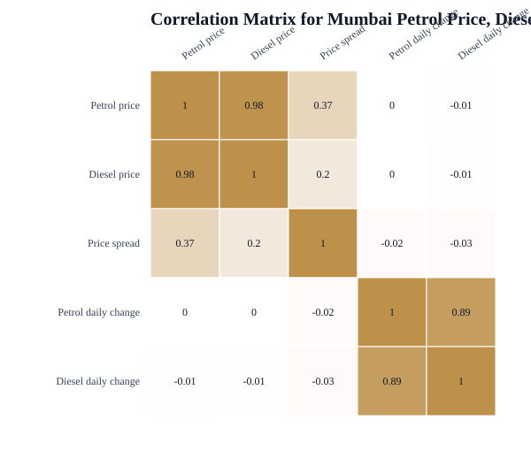
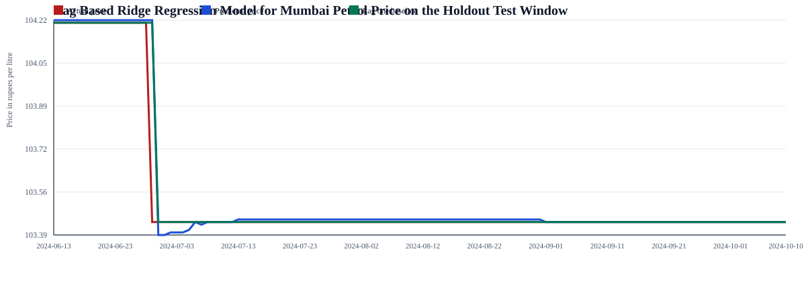
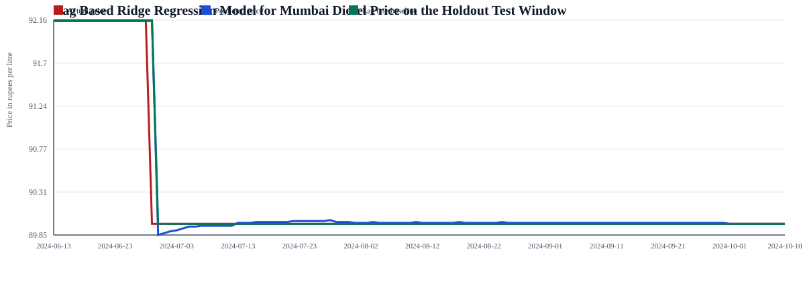
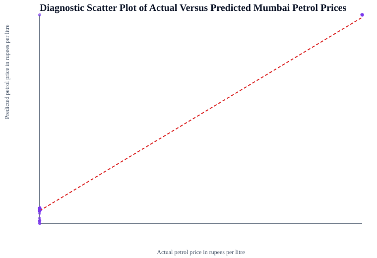
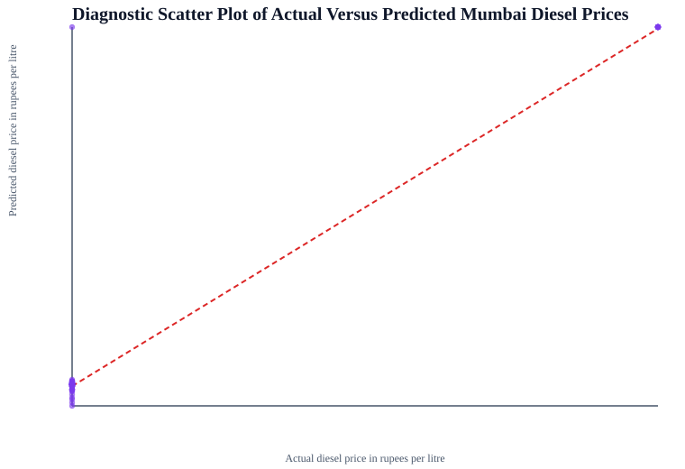

Mumbai Fuel Price Analysis With Lag Based Machine Learning Models
This report uses the Mumbai petrol and diesel data extracted from the Excel files in the Fuel price folder. It documents the workflow from raw data extraction through descriptive statistics, exploratory analysis, correlation review, lag based machine learning models, and diagnostic validation.
Key Results
Common Mumbai dates3186
Petrol model R20.9204
Petrol model RMSE0.03
Diesel model R20.9302
Diesel model RMSE0.09
Petrol outliers0%
Diesel outliers0%
- The dataset was built by extracting Mumbai rows from yearly multi-city files and merging them with the later single-series fuel files.
- Both models use lag periods of 1, 7, 14, and 30 days along with rolling averages and seasonal features.
- Model quality is reported against a simple lag-one baseline to show the benefit of the richer feature set.
Exploratory Data Analysis





Lag Based Machine Learning Models



